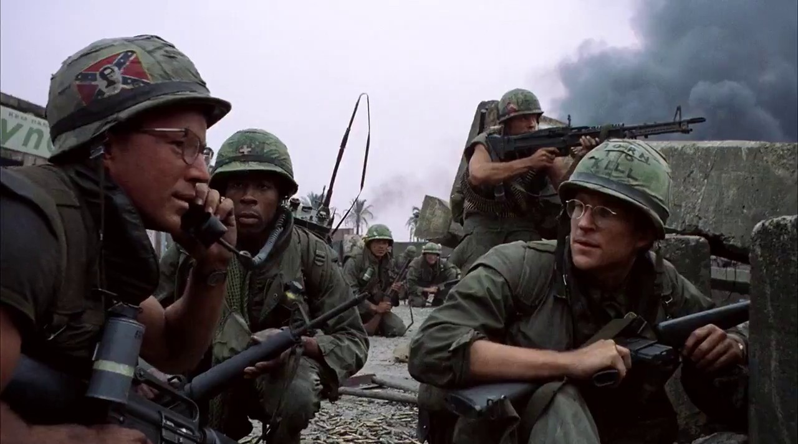

DMDb
Home
Movies
Controversial Movies
(current)
Shows
Get it? Instead of IMDb its DMDb?
Movie Title will appear here!
Try clicking one of the rectangles below!
American History X
Taxi Driver
Full Metal Jacket
Django Unchained
A Clockwork Orange
 American History X
American History X Taxi Driver
Taxi Driver Django UnchainedAmerican History XTaxi DriverDjango Unchained
Django UnchainedAmerican History XTaxi DriverDjango Unchained